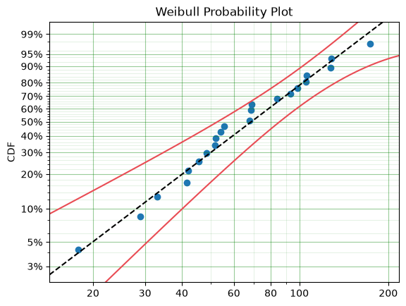

Quickstart¶
So, you know what survival analysis is and you just want to see what this can do.
Alas
import surpyval as surv
x = [17.88, 28.92, 33, 41.52, 42.12, 45.6, 48.4, 51.84,
51.96, 54.12, 55.56, 67.8, 68.64, 68.64, 68.88, 84.12,
93.12, 98.64, 105.12, 105.84, 127.92, 128.04, 173.4]
model = surv.Weibull.fit(x)
model.plot()
<Axes: title={'center': 'Weibull Probability Plot'}, ylabel='CDF'>

This gives us the Weibull plot, which was created when the documentation was built, so it is guaranteed to reflect the current version of SurPyval.